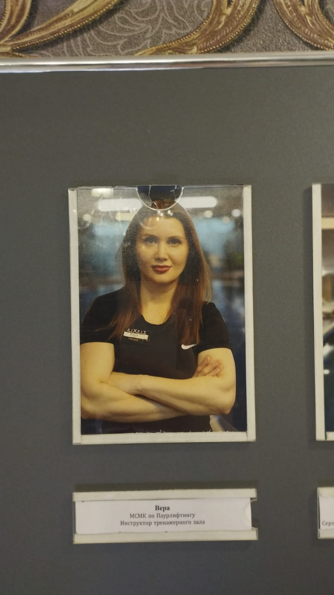
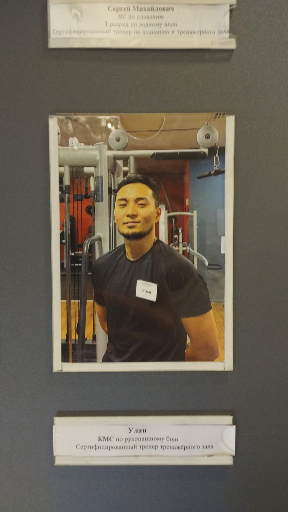
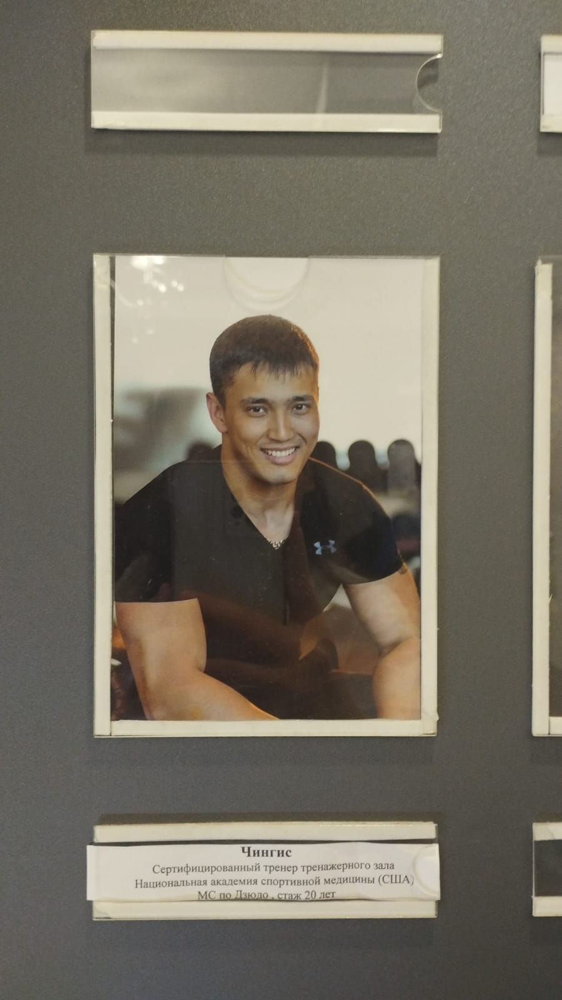
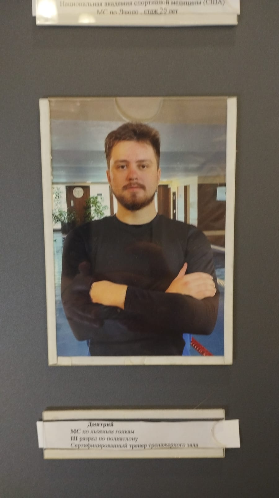
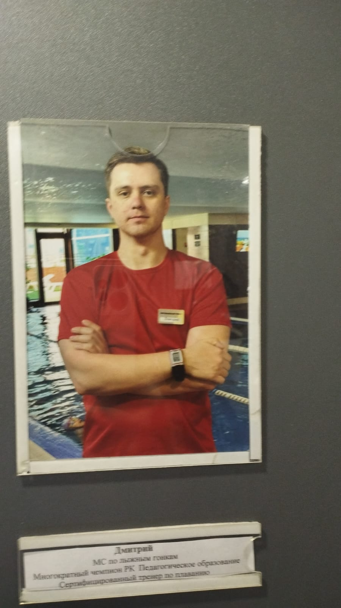
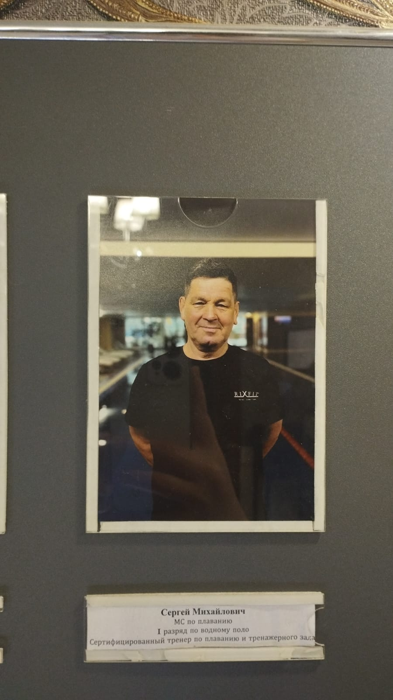
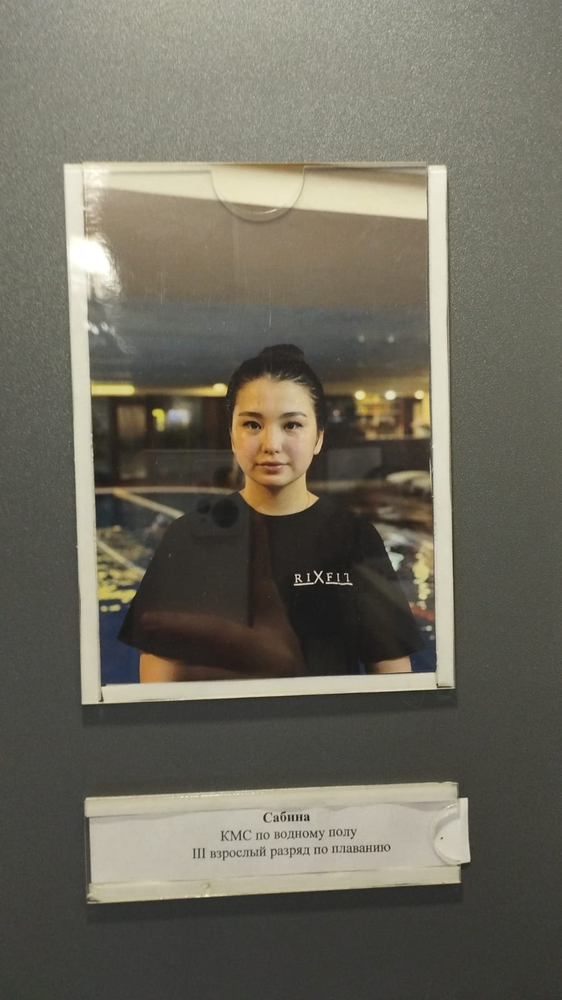
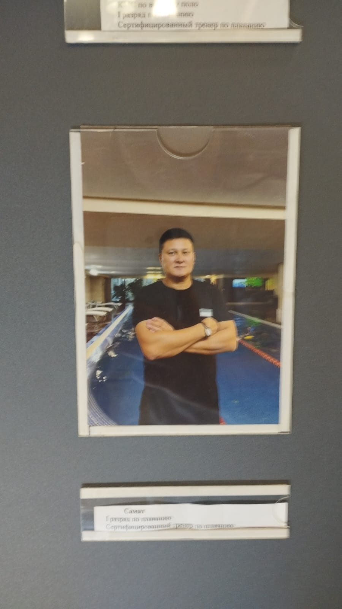

Gym & Strength Coaches

Vera
Role: Gym Instructor | MSMK in Powerlifting
Vera is a gym instructor and an International Master of Sports (MSMK) in powerlifting. With her elite lifting background, she specializes in strength conditioning, proper lifting mechanics, and muscle hypertrophy.

Ulan
Role: Certified Gym Trainer | KMS in Hand-to-Hand Combat
Ulan is a certified gym trainer who holds the title of Candidate for Master of Sports (KMS) in hand-to-hand combat. His martial arts foundation allows him to integrate functional strength, agility, and dynamic endurance into training sessions.

Chingis
Role: Certified Gym Trainer (NASM USA) | MS in Judo
Chingis is certified by the National Academy of Sports Medicine (NASM, USA) and brings over 20 years of athletic coaching experience. As a Master of Sports in judo, he pairs deep sports science knowledge with comprehensive functional training.

Dmitriy
Role: Certified Gym Trainer | MS in Cross-Country Skiing
Dmitriy is a certified gym instructor, a Master of Sports in cross-country skiing, and a 3rd-rank polyathlon athlete. He specializes in aerobic capacity, endurance building, and balanced full-body conditioning.
Swimming & Aquatics Coaches

Dmitriy
Role: Certified Swimming Coach | Multi-time Champion of RK
Dmitriy is a certified swimming instructor and a multiple-time champion of the Republic of Kazakhstan with a degree in pedagogy. He implements a structured, pedagogical approach to stroke development and athletic water conditioning.

Sergey Mikhailovich
Role: Certified Swimming & Gym Trainer | MS in Swimming
Sergey Mikhailovich is a certified swimming and gym instructor holding the title of Master of Sports in swimming and 1st Sports Rank in water polo. His deep aquatic background makes him an expert in stroke refinement, endurance, and aquatic conditioning.

Sabina
Role: KMS in Water Polo | 3rd Rank in Swimming
Sabina is a Candidate for Master of Sports (KMS) in water polo and holds the 3rd Adult Rank in competitive swimming. She focuses on teaching fundamental swimming skills, water confidence, and dynamic aquatic movement for clients of various ages.

Samat
Role: Certified Swimming Coach | 1st Rank in Swimming
Samat is a certified swimming coach holding a 1st Sports Rank in competitive swimming. He is dedicated to perfecting stroke technique, building aquatic endurance, and guiding clients toward their personal fitness goals in the pool.